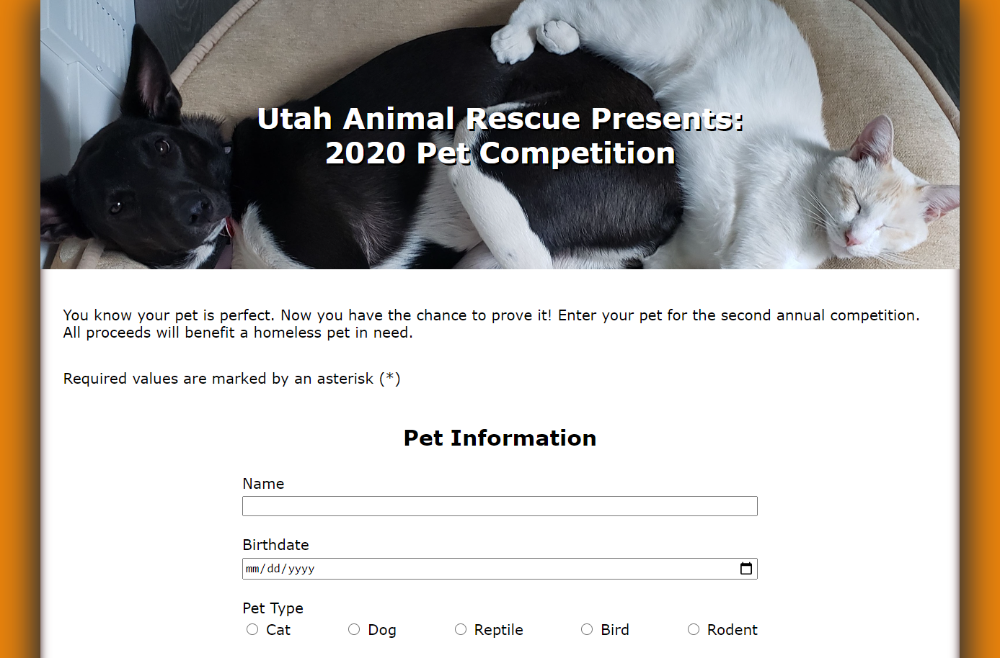
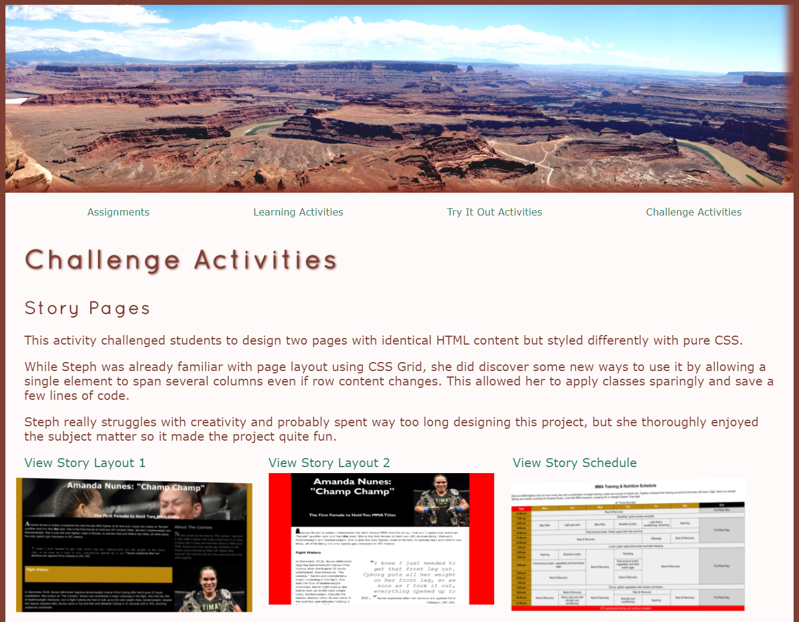
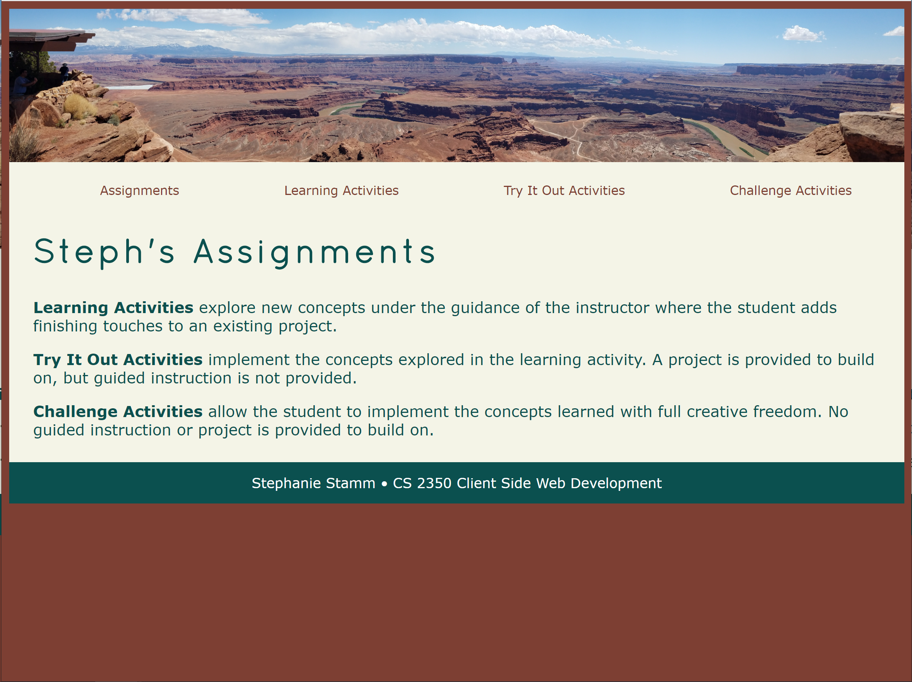

Challenge Activities
Pet Competition Form
This project tasked students with building an HTML form that includes text inputs, date inputs, radio buttons, select drop-down, text area, buttons and more.
Steph loves all things pets, so she found the theme to be fun. She also felt like this project was a nice break from thinking too hard about styling.
She was rather surprised with how much functionality is "baked" into the browser. She hadn't used fieldsets or legends previously, and also learned to limit the HTTP methods, which is a great security add-on.
Graphic Design for Assignments Website
Steph learned how to use an image map for the first time. Plus she got to play with text and box shadows more than ever before.
She likes the way the header image came out. It's popping a bit more now than it had been with increased contrast.
Steph found her OCD was somewhat triggered by having different styles on images throughout the website, but she realizes it's all in the pursuit of learning!
Assignments Page
Story Pages
This activity challenged students to design two pages with identical HTML content but styled differently with pure CSS.
While Steph was already familiar with page layout using CSS Grid, she did discover some new ways to use it by allowing a single element to span several columns even if row content changes. This allowed her to apply classes sparingly and save a few lines of code.
Steph really struggles with creativity and probably spent way too long designing this project, but she thoroughly enjoyed the subject matter so it made the project quite fun.

Assignments Website
Steph already had a pretty good handle on writing semantic HTML and CSS, but had never used the article or section tags so that was a new learning experience. She has also never targeted CSS by ID, so that was a good reminder of additional tools in the toolbox.
She enjoyed having some parameters to work within, and that there were plenty of HTML and CSS examples to draw inspiration from.
Creative freedom makes Steph uncomfortable because it feels too wide open, so styling a project from scratch was challenging. However, with several aesthetic templates to draw from, she could focus a bit more on the content and resume calm breathing.
